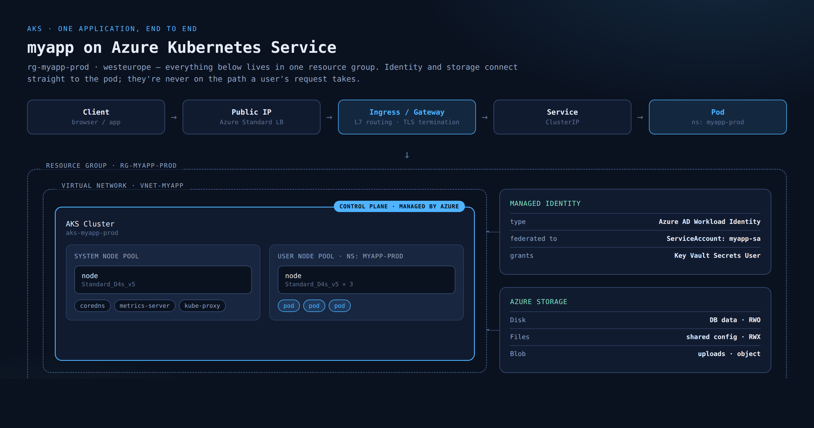

Learn Kubernetes in the order a senior engineer would actually teach it — 28 stops, start to certification-ready.
Docker first, exam prep last, nothing out of sequence in between. Every stage stands on the one before it: you can't reason about a Service before you've built a Pod, and taints don't mean anything until you understand scheduling. AKS is the concrete environment threaded through the examples — but the curriculum itself is Kubernetes, full stop. Read top to bottom the first time; use the rail to jump back in later.
Containers & Docker
A container bundles your app with everything it needs to run — runtime, libraries, config — into one image built from a Dockerfile. Unlike a VM it doesn't carry its own kernel; it shares the host's, which is why it starts in milliseconds instead of minutes.
- Image — a read-only template built in layers, one per Dockerfile instruction.
- Container — a running instance of an image. Ephemeral by default: anything not in a volume disappears on restart.
- Registry — where images live (Docker Hub, Azure Container Registry).
docker push/pullmove them in and out. - Kubernetes doesn't run Docker directly — AKS nodes use containerd, the same OCI runtime Docker is built on. Your Dockerfile and images work unchanged.
# build stage FROM golang:1.22 AS build WORKDIR /src COPY . . RUN go build -o /out/myapp # final stage — nothing but the binary FROM gcr.io/distroless/base COPY --from=build /out/myapp /myapp ENTRYPOINT ["/myapp"] # build, tag, push to ACR docker build -t myacr.azurecr.io/myapp:1.4.0 . docker push myacr.azurecr.io/myapp:1.4.0
Kubernetes basics
Kubernetes keeps a declared number of containers running somewhere across a fleet of machines, restarts them when they die, and moves them when a machine fails — without anyone SSH-ing in to fix it by hand. You describe the desired state; controllers continuously drive the cluster toward it.
- Declarative, not imperative — you say "3 replicas of this image," never "start container A on node B."
- Reconciliation loop — controllers compare desired vs. actual state constantly and correct drift.
- Everything is an object — Pods, Services, Deployments are records in the API, persisted in etcd.
- AKS manages the parts that make this promise possible (the control plane); you manage what you ask it to run.
Architecture
Every cluster splits into two halves. The control plane makes decisions: the API server (front door for every request), the scheduler (picks which node a pod lands on), controller-manager (runs the reconciliation loops), and etcd (the cluster's database). The data plane is where workloads run: nodes, each with kubelet, kube-proxy, and a container runtime.
- API server — the only thing anything talks to, including kubectl and the other control-plane pieces.
- etcd — a distributed key-value store holding the entire cluster's state. Lose it, lose the cluster.
- kubelet — the node agent that starts/stops containers per the API server's instructions.
- On AKS the control plane is Azure-managed and mostly invisible; you only operate node pools.
kubectl cluster-info kubectl get nodes -o wide kubectl get --raw /healthz # is the API server up? kubectl get pods -n kube-system # control-plane helpers
kubectl
kubectl talks to the API server over HTTPS and turns your commands into API requests. Almost everything you do — read, create, edit, delete, debug — goes through it, so fluency here compounds fast.
get/describe/logs/exec— your core debugging loop for reading state.apply -f— declarative: hands a YAML file to the API server and lets it diff against current state.create/delete— imperative, fine for scratch work, not for anything you want reproducible.-o yaml/--dry-run=client -o yaml— turn any live object, or any command, into starter YAML.
kubectl explain <resource>.<field> pulls docs straight from the cluster's own OpenAPI schema — faster than the web docs, and it never drifts from the version you're actually running.kubectl get pods -n myapp-prod -o wide kubectl describe pod myapp-7d9f -n myapp-prod kubectl logs -f myapp-7d9f -n myapp-prod kubectl exec -it myapp-7d9f -n myapp-prod -- sh kubectl explain deployment.spec.strategy kubectl apply -f deployment.yaml --dry-run=client -o yaml
Pods
A pod is one or more containers that share a network namespace (they talk over localhost) and can share storage volumes. It's the smallest unit Kubernetes schedules — and on its own, it's fragile: a bare pod that dies stays dead.
- Usually one container per pod; multi-container pods are for tightly coupled helpers (sidecars), not general composition.
- Pods are mortal — nodes fail, pods get evicted, IPs churn. Nothing in production should be a bare pod.
- Init containers run to completion before the main container starts — good for "wait for the DB" setup.
kubectl runis for scratch debugging only, never how you ship anything real.
kubectl apply-ing a bare Pod for anything but a one-off debug container, stop — you want a Deployment. Bare pods don't get rescheduled if the node dies.apiVersion: v1 kind: Pod metadata: name: myapp-debug spec: initContainers: - name: wait-for-db image: busybox command: [sh, -c, until nc -z db 5432; do sleep 1; done] containers: - name: myapp image: myacr.azurecr.io/myapp:1.4.0 ports: [{ containerPort: 8080 }]
YAML
Every Kubernetes object — from a Pod to a ClusterRoleBinding — follows the same shape: apiVersion, kind, metadata, spec. Learn that shape once and you can read any manifest, even for resources you've never used.
- apiVersion — which API group/version defines this kind (
v1,apps/v1,networking.k8s.io/v1...). - kind — the resource type: Pod, Deployment, Service...
- metadata — name, namespace, labels, annotations. Identity and tags, not behavior.
- spec — the desired state you declare;
statusis filled in by the cluster, never written by hand.
kubectl apply throws a parse error — run everything through --dry-run=client before you commit it.apiVersion: apps/v1 # which API defines "kind" below kind: Deployment # the resource type metadata: # identity: name, namespace, labels name: myapp namespace: myapp-prod labels: { app: myapp } spec: # desired state — you write this replicas: 3 # status: ← cluster-managed, never hand-written
Deployments & ReplicaSets
A Deployment doesn't manage pods directly — it manages a ReplicaSet, which manages the pods. You'll almost never touch a ReplicaSet by hand; it exists so the Deployment has something to swap out during a rolling update.
- Deployment — declares desired replica count and pod template; owns the rollout strategy.
- ReplicaSet — keeps N pods matching a label selector running at all times.
- A rolling update creates a new ReplicaSet and scales it up while scaling the old one down — that's zero-downtime deploys.
kubectl rollout undois instant because the previous ReplicaSet is still there, just scaled to zero.
kubectl get replicasets after a few deploys shows old, scaled-to-zero ReplicaSets sitting around — that's normal, it's what makes rollback instant. revisionHistoryLimit controls how many it keeps.apiVersion: apps/v1 kind: Deployment metadata: name: myapp namespace: myapp-prod spec: replicas: 3 revisionHistoryLimit: 5 selector: { matchLabels: { app: myapp } } template: metadata: { labels: { app: myapp } } spec: containers: - name: myapp image: myacr.azurecr.io/myapp:1.5.0 kubectl rollout status deploy/myapp -n myapp-prod kubectl rollout undo deploy/myapp -n myapp-prod
Services
Pods die and get replaced with new IPs constantly. A Service gives them one stable address regardless of which pods are behind it at any moment — it's a label selector plus a virtual IP, not a process.
- ClusterIP (default) — reachable only inside the cluster. Most services should be this.
- NodePort — opens a port on every node. Rarely used directly.
- LoadBalancer — on AKS, provisions an actual Azure Standard Load Balancer with a public (or, via annotation, private) IP.
This is Layer 4: it balances TCP/UDP connections across nodes with zero awareness of HTTP paths, hostnames, or headers. For that, you need Ingress — stage 15.
type: LoadBalancer Service provisions its own Azure Load Balancer and its own public IP. Fine for one or two entry points; expensive and hard to manage once you have ten services to expose. That's exactly the problem Ingress solves.apiVersion: v1 kind: Service metadata: name: myapp namespace: myapp-prod annotations: # drop this line for a public IP instead service.beta.kubernetes.io/azure-load-balancer-internal: "true" spec: type: LoadBalancer selector: { app: myapp } ports: - { port: 443, targetPort: 8080 }
Labels & selectors
Labels are arbitrary key-value tags on objects. Selectors are queries against those tags. Nearly every relationship in Kubernetes — which pods a Deployment owns, which pods a Service routes to — is a selector matching labels, not a direct pointer.
- A Deployment's
selector.matchLabelsmust match its pod template's labels — mismatch it and the Deployment can't find its own pods. - Services find pods by selector, not by name — rename or replace a pod and nothing breaks.
- Annotations look similar but aren't selectable. Use labels for anything you query on; annotations for metadata tooling reads (build SHA, owner).
kubectl get pods -l app=myapp,tier=backend— selector syntax works from the CLI too.
metadata: labels: { app: myapp, tier: backend, env: prod } # find pods by label from the CLI kubectl get pods -l app=myapp,tier=backend kubectl get pods -l 'env in (prod,staging)'
Namespaces
A namespace partitions one cluster into separate zones for names, quotas, and permissions. It does not isolate at the kernel or network level by default — a pod in dev can still reach a pod in prod unless a NetworkPolicy says otherwise (stage 21).
Three ship built in: default, kube-system (cluster internals — leave it alone), and kube-public. Everything you create should get its own.
- One namespace per environment (or per team, or per app) — pick a convention and stick to it.
- ResourceQuota caps total CPU/memory a namespace can consume.
- RoleBinding scopes who can do what, per namespace (stage 20).
apiVersion: v1 kind: Namespace metadata: name: myapp-prod --- apiVersion: v1 kind: ResourceQuota metadata: name: myapp-quota namespace: myapp-prod spec: hard: requests.cpu: "4" requests.memory: 8Gi limits.cpu: "8" limits.memory: 16Gi
ConfigMaps & Secrets
Baking config into an image means rebuilding it for every environment. ConfigMaps and Secrets let the same image run in dev, staging, and prod with different config injected at deploy time — as env vars or mounted files.
- ConfigMap — non-sensitive config: feature flags, URLs, log levels.
- Secret — same shape, but base64-encoded (not encrypted by default) and handled specially by RBAC. Base64 is encoding, not security.
- Mount as env vars for values read once at startup; mount as a volume for values that should update without a restart.
- On AKS, prefer Azure Key Vault + the Secrets Store CSI Driver (backed by the Workload Identity from stage 20) over native Secrets for anything genuinely sensitive.
apiVersion: v1 kind: ConfigMap metadata: { name: myapp-config, namespace: myapp-prod } data: LOG_LEVEL: info --- apiVersion: v1 kind: Secret metadata: { name: myapp-secret, namespace: myapp-prod } stringData: API_KEY: change-me --- # in the pod spec: envFrom: - configMapRef: { name: myapp-config } - secretRef: { name: myapp-secret }
Health probes
A pod with status "Running" isn't the same as a pod that's ready to serve traffic. Probes are how you tell Kubernetes the difference.
- livenessProbe — fails repeatedly and Kubernetes kills and restarts the container. For "it's stuck," not "it's slow."
- readinessProbe — fails and the pod is pulled out of Service endpoints, but not restarted. For "not ready yet."
- startupProbe — covers slow-starting apps; liveness/readiness don't start checking until this passes.
- HTTP, TCP, or exec — pick whichever actually reflects health; an exec probe that always returns 0 tells you nothing.
containers: - name: myapp startupProbe: httpGet: { path: /healthz, port: 8080 } failureThreshold: 30 periodSeconds: 2 readinessProbe: httpGet: { path: /ready, port: 8080 } periodSeconds: 5 livenessProbe: httpGet: { path: /healthz, port: 8080 } periodSeconds: 15 timeoutSeconds: 5 failureThreshold: 3
Volumes, PV, PVC, StorageClass
Anything a container writes to its own filesystem vanishes on restart. The chain that survives it: a StorageClass (how to provision), a PersistentVolumeClaim (a pod's request for storage), and the PersistentVolume the cluster binds to it.
- AKS ships three CSI drivers pre-installed: Azure Disk (block,
ReadWriteOnce— one pod at a time, good for a database), Azure Files (SMB/NFS,ReadWriteMany— shared config), Azure Blob (object storage, large unstructured data). - A PVC is a request, not a guarantee — it stays
Pendinguntil something can satisfy it. - Deleting a PVC's pod doesn't delete the PVC; deleting the PVC's reclaimPolicy decides whether the underlying disk is deleted or retained.
Pending waiting for a node in the disk's zone. Match the StorageClass's allowedTopologies to your node pool's zones.apiVersion: storage.k8s.io/v1 kind: StorageClass metadata: name: managed-premium-zrs provisioner: disk.csi.azure.com parameters: skuName: PremiumV2_ZRS --- apiVersion: v1 kind: PersistentVolumeClaim metadata: name: myapp-data namespace: myapp-prod spec: storageClassName: managed-premium-zrs accessModes: [ReadWriteOnce] resources: requests: { storage: 20Gi }
StatefulSets
A Deployment's pods are interchangeable — replica #2 dying and coming back with a new name and a new disk is fine. A StatefulSet exists for workloads where that's not fine: databases, brokers, anything where "which one is this" and "in what order did it start" matters.
- Stable, predictable pod names —
myapp-0,myapp-1,myapp-2, not random suffixes. - Each replica gets its own PVC via
volumeClaimTemplates, and keeps the same one across restarts. - Ordered, sequential start/stop by default (0, then 1, then 2) — matters for clustered databases with a defined join order.
- Needs a headless Service (
clusterIP: None) so each pod gets its own stable DNS name.
apiVersion: apps/v1 kind: StatefulSet metadata: { name: myapp-db, namespace: myapp-prod } spec: serviceName: myapp-db # headless Service replicas: 3 selector: { matchLabels: { app: myapp-db } } template: metadata: { labels: { app: myapp-db } } spec: { containers: [{ name: db, image: postgres:16 }] } volumeClaimTemplates: - metadata: { name: data } spec: accessModes: [ReadWriteOnce] resources: { requests: { storage: 50Gi } }
One request, start to finish
Everything above, in one frame. Identity and storage sit beside the cluster because pods reach out to them directly — they're not on the path a user's HTTP request takes.

{kind=link}
VNet → AKS cluster
Managed identity
Federated to the pod's ServiceAccount. Grants the app a token — no secrets in YAML.
Azure storage
Disk (db data) · Files (shared config) · Blob (uploads) — mounted or called directly by the pod.
Commands you'll actually type
| Stage | Command | What it does |
|---|---|---|
| Foundation | az group create | Create the resource group everything lives in |
| Foundation | az network vnet create | Create the VNet/subnet nodes attach to |
| Cluster | az aks create | Provision the control plane + first node pool |
| Cluster | az aks get-credentials | Pull cluster credentials into your local kubeconfig |
| Cluster | az aks nodepool add | Add a second, workload-dedicated node pool |
| Namespaces | kubectl create namespace <name> | Create an isolation boundary for an app/env |
| Namespaces | kubectl config set-context --current --namespace=<name> | Stop typing -n on every command |
| Pods | kubectl apply -f deployment.yaml | Create/update a Deployment |
| Pods | kubectl rollout status deploy/<name> | Watch a rollout to completion |
| Pods | kubectl describe pod <name> | First stop when a pod won't schedule or start |
| Identity | az identity create | Create a user-assigned managed identity |
| Identity | az identity federated-credential create | Federate the identity to a ServiceAccount via OIDC |
| Storage | kubectl get storageclass | List available provisioners on the cluster |
| Storage | kubectl get pvc -n <ns> | Check whether a claim actually bound to a volume |
| Load balancing | kubectl get svc -n <ns> | See the external IP assigned to a LoadBalancer Service |
| Ingress | helm install ingress-nginx ... | Install the NGINX ingress controller |
| Ingress | kubectl get ingress -n <ns> | Confirm host/path rules and the assigned address |
| Gateway API | kubectl get gateway,httproute -A | List gateways and routes cluster-wide |
| Everywhere | kubectl logs -f <pod> -n <ns> | Tail logs from a running pod |